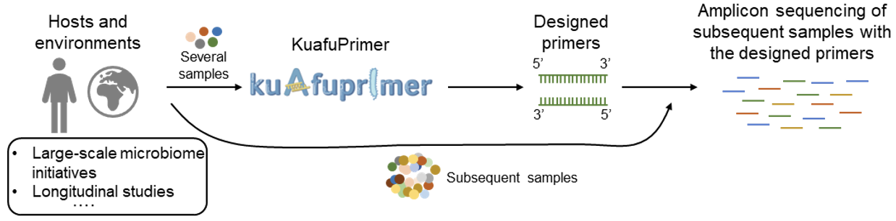
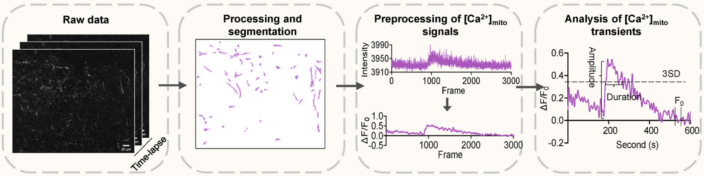
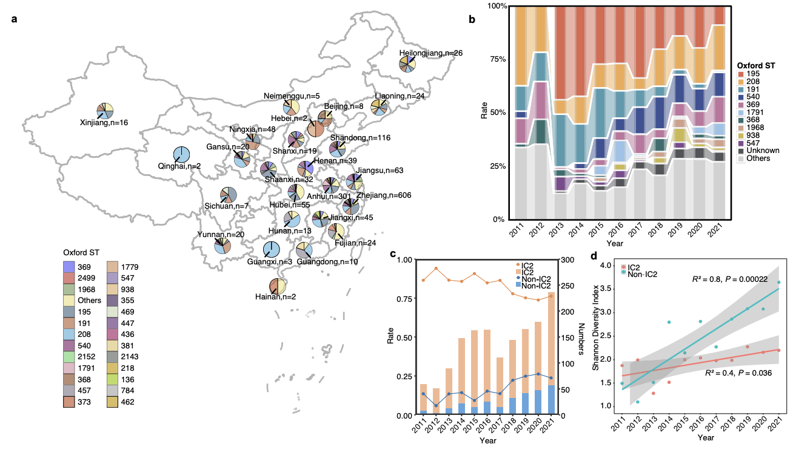
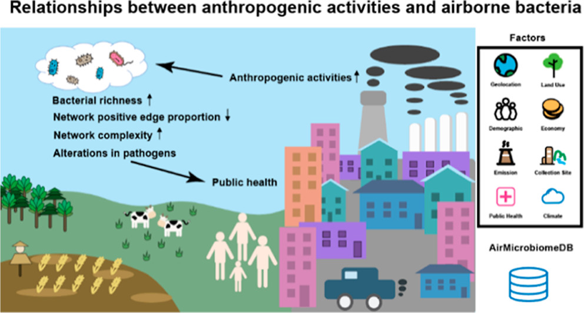
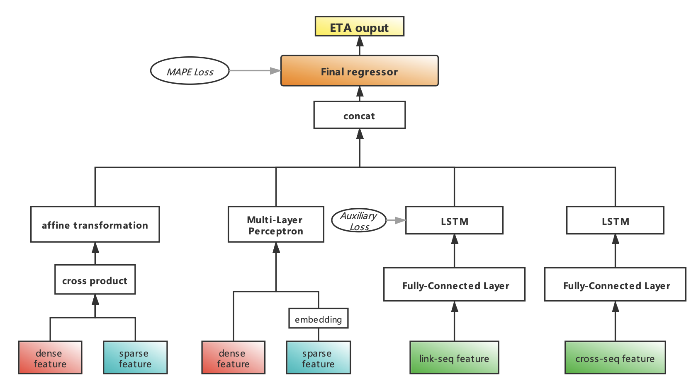

About
Experiences
Aug, 2025 - Now
Algorithm Intern @ 2012 Labs, Huawei
Focusing on on-device deployment of large language models (LLMs), as well as research and development of agent systems and Mixture-of-Experts (MoE) algorithms.
Sep, 2021 - Now
Ph.D. Student @ CFT, Peking University
Pursuing a Ph.D. degree in Biomedical Artificial Intelligence.
Publications ( / )

CFMoE: Cache-Friendly Mixture of Experts Model Serving System on Edge Devices
Arxiv 2025

KuafuPrimer: Machine learning facilitates the design of 16S rRNA gene primers with minimal amplification bias in bacterial communities
BioRxiv 2025

In vivo imaging of neuronal mitochondrial Ca2+ transients with two-photon microscopy in awake mice
Mitochondrial Communications 2025

Genomic epidemiology and phylodynamics of Acinetobacter baumannii bloodstream isolates in China
Nature Communications 2025

Global Meta-analysis of Airborne Bacterial Communities and Associations with Anthropogenic Activities
Environmental Science & Technology 2022

Travel Time Estimation Based on Neural Network with Auxiliary Loss
SIGSPATIAL 2021